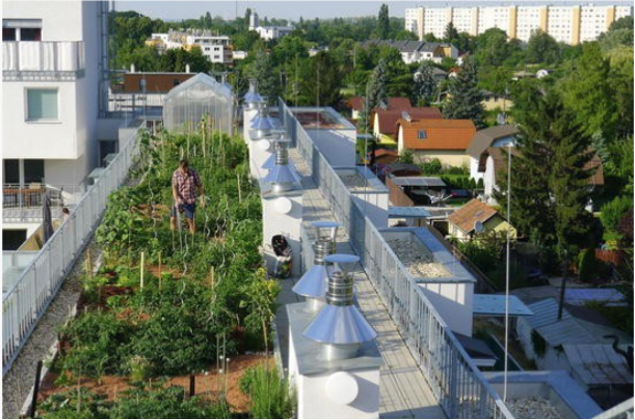
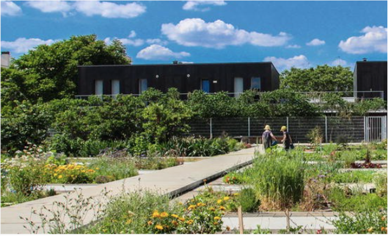
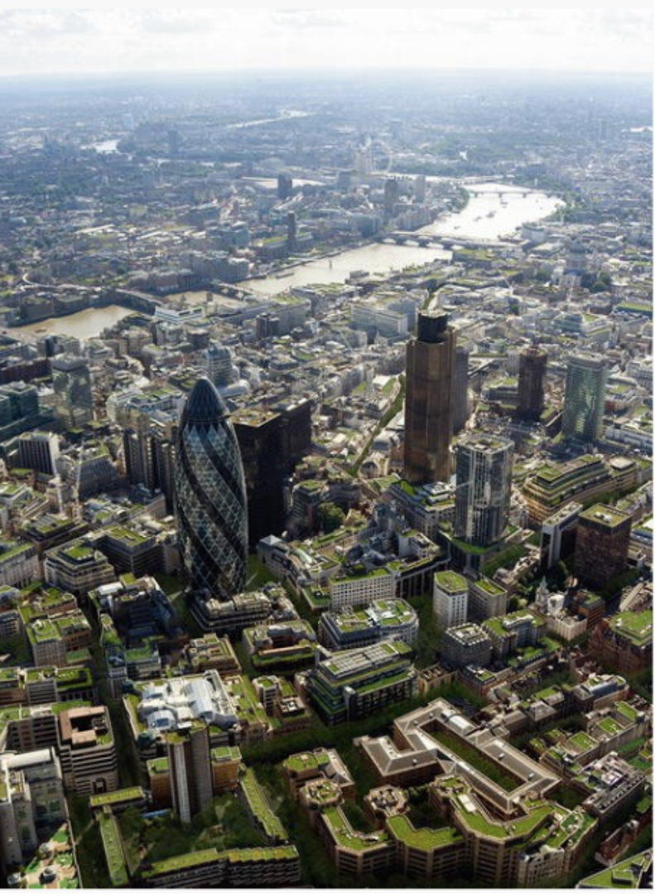
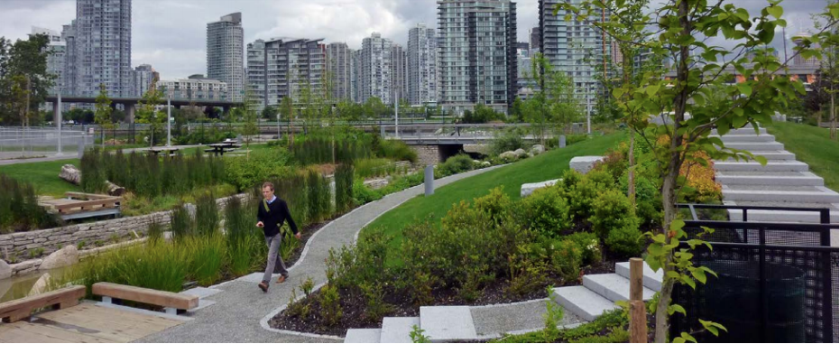
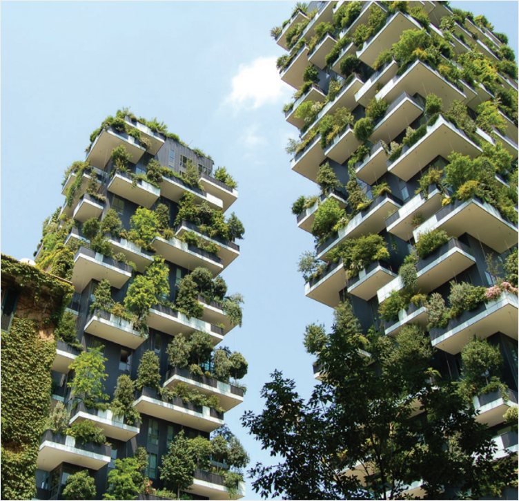
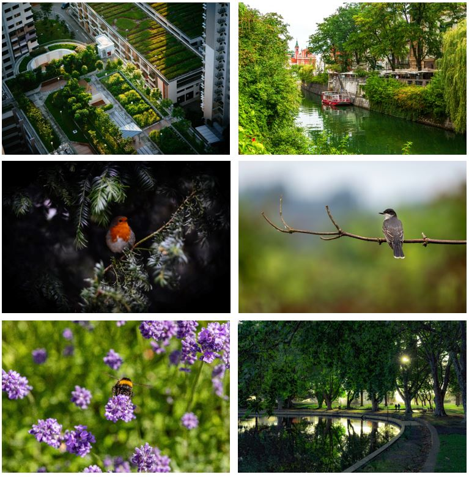
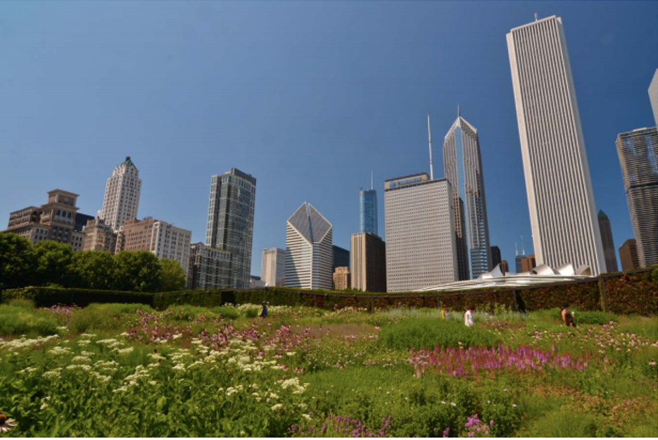
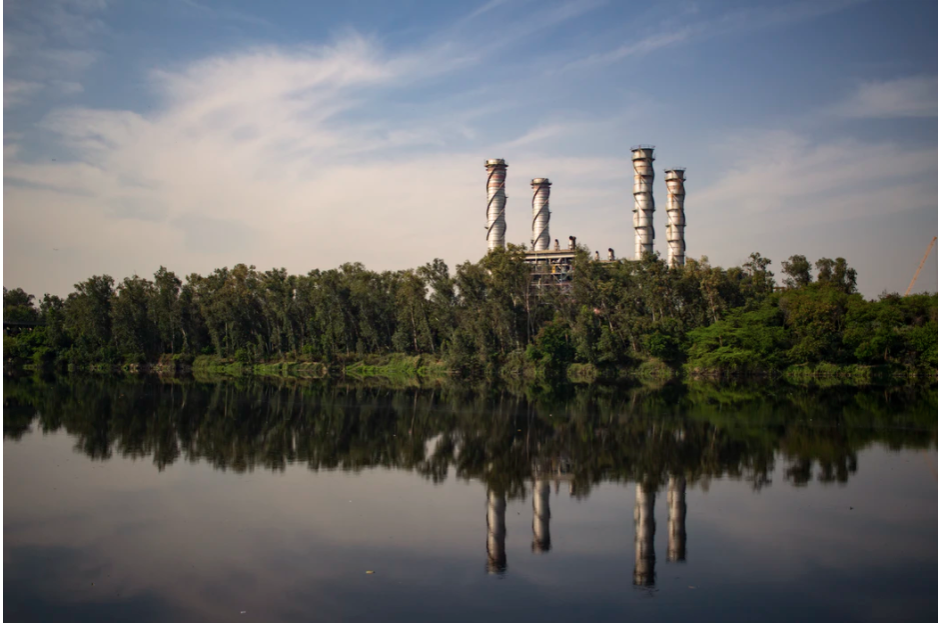
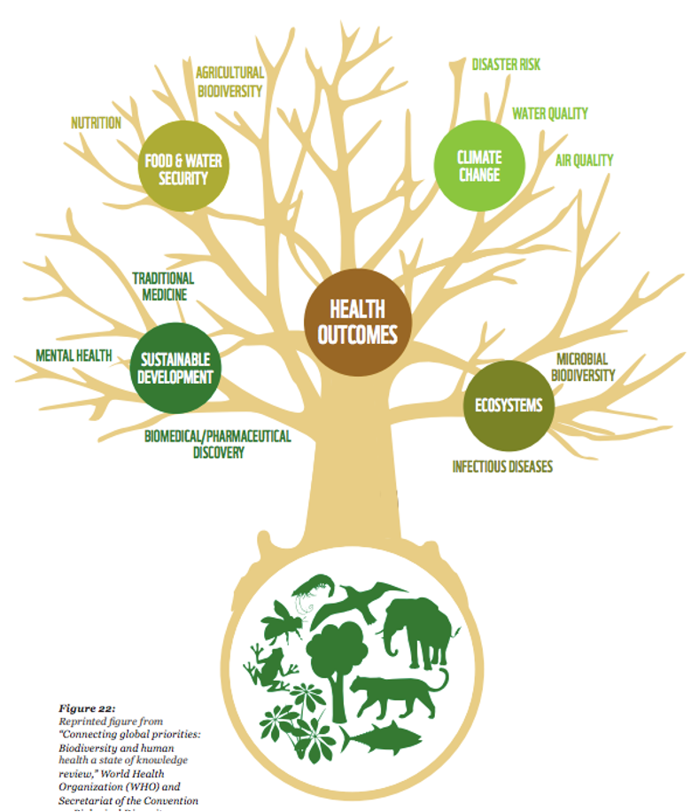

This lecture will consider how nature-based solutions (NbS) can be integrated into different aspects of the urban environment. It will provide examples of how NbS can be integrated into buildings and cities, and other aspects of urban contexts.
Recall how NbS can be integrated to enhance building sector services
Recall how NbS can be integrated to promote positive outcomes in urban environments
Consider the ways in which NbS can benefit occupants across different sectors.
Nature-based solutions (NbS) can be strategically integrated into buildings across all infrastructure sectors, including residential, office, transport, hospitals, schools, emergency response (e.g. police stations) and industrial buildings.
Beyond simple aesthetic and environmental appeal, NbS can provide various services which can benefit the building sector and urban landscape (Enzi et al. 2017; Blicharska et al. 2019). For example, green roofs and walls can shade external building facades from weather and climate impacts, enhance their durability and lifespan, reducing maintenance and associated costs.
NbS can support the delivery of basic services to buildings, including sanitation, water and food supplies, and sustainable energy. For example, constructed treatment wetlands can be incorporated into buildings to reduce wastewater treatment infrastructure and support sanitation and hygiene (Revitt, Worrall, and Brewer 2001; Stefanakis 2019). Equally, green roofs, rainwater harvesting systems and landscaped areas can capture rainwater for reuse. This can support provision of freshwater for domestic purposes, support sanitation and hygiene and increase resilience of buildings and cities to drought. Green roofs can also anchor rooftop solar panels, while evapotranspiration of plants keeps solar panels cool, increasing their productivity rate by up to 20% and supporting renewable energy supply (Enzi et al. 2017).
NbS can provide various cost savings to building occupants. For example, green roofs and walls can insulate buildings, reduce heat exchange and associated requirements for heating and cooling, leading to increased energy efficiency and reduced expenditure on energy (see mini-lecture 16.4).
Various cities are integrating green roofs and urban farming, including New York, Berlin, Hong Kong and Singapore, and sectors including air transport, schools and hospitals (Newman 2014).

Figure 17.4.1: Rooftop farming in Vienna. Green roofs can enhance building durability whilst doubling as space for activities that support economic, societal and environmental health (Enzi et al. 2017)

Figure 17.4.2: Green roof on a gym in Paris. Green roofs can enhance durability of building structures whilst delivering co-benefits including air quality, mental health and well-being, space for recreation and aesthetic value (Enzi et al. 2017)
Table 17.4.1: Examples of economic benefits of integrating NbS into buildings (European Commission 2013; GMCA 2019)
| Economic benefit | Description |
|---|---|
| Increased lifespan of engineered infrastructure |
|
| Reduced maintenance costs |
|
| Increased property prices |
|
| Additional economic opportunities |
|
| Reduced wastewater treatment costs |
|
| Reduced energy costs |
|
| Reduced building expenditure |
|
Integrating NbS in urban landscapes such as cities can provide multiple social, environmental and economic benefits to the urban context (Green Infrastructure North West 2013).
NbS, such as green roofs, walls, balconies, bus shelters, car parks, gardens, graveyards, parks and other green spaces, can support sanitation and hygiene in urban areas by regulating water quantity, reducing stormwater runoff, reducing pollutant loads and preventing sewer system overflows, safeguarding urban water supplies.

Figure 17.4.3: Green roofs can reduce annual stormwater runoff by up to 50-90% for smaller storms (up to 25mm) and at least 30% for larger storms (GMCA 2019; Enzi et al. 2017).
By leveraging NbS in urban areas, cities can increase economic generation, including by attracting inward investment and through increased property prices (GMCA 2019; Green Infrastructure North West 2013). Furthermore, through mitigating climate hazards (e.g. flooding) and delivering protective services (e.g. enhanced building durability), NbS can lead to lower insurance premiums.
NbS can have profound impacts on the health of urban populations, by reducing temperatures and the urban heat island effect (mini-lecture 16.4), purifying air and increasing the physical and mental health of urban dwellers (Turhan and Gökçen Akkurt 2018). This can deliver wider benefits, including reduced government expenditure on health services through prevention and reduction of health problems.
Green spaces such as urban parks, when implemented with proper consideration, can increase community cohesion and reduce violence in urban areas. NbS can also support the safety of urban transport networks, including by increasing the attention span and reducing the speed of drivers (GMCA 2019).
In Singapore, in the central commercial and shopping area, there is now a requirement that all new or refurbished buildings must replace the whole footprint coverage of a building with green space (e.g. green roofs, walls, balconies). In this way, the whole city is designed to have access to nature (Newman 2014).

Figure 17.4.4: Green spaces can provide benefits to the physical and mental health of populations, through opportunities for exercise, reduction in the urban heat island effect and improving air quality, as well as aesthetic appeal. Photograph from Browder et al. (2019).

Figure 17.4.5: Green spaces in cities can shield buildings from weather impacts. Photograph from Kapos et al. (2019).

Figure 17.4.6: NbS can form part of a larger network of wildlife corridors in urban and suburban areas, supporting wider biodiversity goals, and contribute to carbon sequestration. Photographs from Unsplash.
Integration of NbS has been shown to increase the effectiveness and productivity of workforces. Studies show that high quality accessible green spaces can improve health, cognitive functioning, alleviate stress and enhance motivation of workforces. For example, a 2003 report by The California Energy Commission found that workers in a call centre in Sacramento performed 10-25% better on memory function tests when they had a view of vegetation, compared to no view (Green Infrastructure North West 2013). Moreover, people’s access to natural scenery is significantly correlated to job satisfaction, health and productivity.
NbS can further benefit offices and other sectors such as finance and retail by improving health outcomes and reducing staff absences from work. For example, Elzeyadi (2011) found that employees who had a view of trees and natural landscapes took an average of 57 hours of sick leave per year, compared to 68 hours of sick leave for employees who had no view of nature. The study concluded that integrating views of nature into office space can save over USD2,000 per employee.
High quality green spaces can help businesses build a good image and reputation, encouraging inward investment and employment (GMCA 2019). For example, well-managed NbS, through increasing the attractiveness and quality of public space, is considered to increase attractiveness of retail centres, leading to higher commercial retail rents, increased occupancy, and increased footfall by visitors. Studies show that this leads to additional economic benefits, including through increased spending of visitors in local restaurants. Similarly, lack of nature or degraded natural spaces can lead to poor perceptions of an area, and act as a barrier to investment, recruitment and staff retention.

Figure 17.4.7: A green roof on top of a car park and rail yard in Illinois. The roof helps slow stormwater runoff and provides the surrounding offices with a view of nature (Browder et al. 2019)
NbS can be integrated into industrial sectors, including solid waste, wastewater and manufacturing and production, to generate cost savings and support their economic productivity and growth, while delivering important benefits to their workforce.
For example, as discussed in mini-lecture 17.2, industrial sectors can integrate NbS such as constructed treatment wetlands and reed beds to support treatment of wastewater streams arising from production and other industrial processes, reducing wastewater treatment requirements and associated costs (Langergraber 2013). Furthermore, by restoring ecosystems surrounding factories, landfills and other industrial buildings, NbS can help to reduce the leaching of industrial pollutants and safeguard local water courses (Aluko and Sridhar 2005; Lamb et al. 2013).
NbS could improve air quality in and around factory buildings, by absorbing pollutants and oxygenating the environment, and can also regulate the indoor microclimate of factories (Blicharska et al. 2019). This could lead to improved health outcomes for sector staff leading to improved physical well-being, and reduced incidence of respiratory illnesses associated with industrial processes. Integration of green spaces into factories could also reduce stress of workers and increase their attention span, helping to ensure improved mental health and a happier, more productive workforce (GMCA 2019). Furthermore, integration of nature on factory buildings, such as green roofs and living walls, could help to regulate the urban heat island effect and local environment, leading to benefits for surrounding communities (Turhan and Gökçen Akkurt 2018).

Figure 17.4.8: NbS could be integrated in and around factory buildings for various benefits including increasing the health, well-being and productivity of workers. Photograph from Unsplash.
Integrating NbS into urban areas can provide a variety of services which improve mental health and well-being. These include (but are not limited to) the provision of opportunities for exercise, reducing stress levels and improving mental health through aesthetic appeal and spiritual appreciation, offering visual relief in the built environment and improved quality of life, as well as improved thermal comfort (see Figure 17.4.9) (GMCA 2019; Green Infrastructure North West 2013).
Equally, NbS can enhance physical health through regulating the urban heat island effect, improving air quality and reducing the incidence of respiratory illnesses, purifying the environment, provisioning nutritious food, reducing disease and maintaining quality water supplies (Blicharska et al. 2019; CNT 2010).

Figure 17.4.9: Natural ecosystems provide various benefits which contribute to good health outcomes (WWF 2020)
As well as helping to prevent health-related issues, studies have shown that integrating nature into hospitals can reduce patient recovery time and associated costs with long hospital stays (Viray 2018; Newman 2014). Therapeutic gardens can be specifically incorporated into hospital buildings and grounds. Plants are considered to have healing views, that help to reduce blood pressure and heart rates. Ulrich (1984) found that people recover quicker from surgery if they had a view of trees from their hospital room, rather than a view of a wall, through restorative influences.
NbS can also support education outcomes, by increasing cognitive functioning, attention spans and providing opportunities for students to learn about aspects such as sustainable development, biodiversity and climate change (Stenfors et al. 2019; Bratman et al. 2015). Furthermore, by integrating green roofs and rainwater harvesting devices on school and university buildings, students can have access to food and water, supporting the reduction in malnutrition, enable learning about vegetable growing, and take part in educational planting projects.
This lecture has provided an overview of some of the ways in which nature-based solutions can be integrated into urban contexts. There are various options for integrating NbS, beyond green roofs, including therapeutic gardens, green balconies and greenspaces around factories. By investing in NbS in buildings, urban landscapes, and sectors including industry, retail, offices, health and education, cities and their occupants can benefit in multiple ways, including from improved economic productivity, improved environmental quality and health benefits.